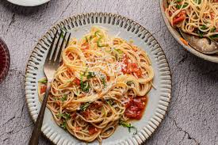

Capellini Pomodoro Pasta

This filling, simple recipe for angel hair pasta with a fresh tomato basil sauce, known as Capellini Pomodoro, is purported to be similar to the one served at the Olive Garden chain of restaurants.
Capellini ("little hairs" in Italian) and angel hair pasta are similar products but are sold under different names. The first is, obviously, of Italian origin, and the latter is the English denomination for it. The thickness of the pasta is also similar, with the angel hair slightly thinner. For our recipe, you could use either one.
Ingredients
- 1/3 cup extra-virgin olive oil
- 3 cloves garlic, minced
- 2 (14.5-ounce) cans diced tomatoes
- Kosher salt, to taste
- Freshly ground black pepper, to taste
- 1 cup freshly grated Parmesan cheese
- 12 ounces angel hair pasta, or capellini
Steps to Make
- Heat the olive oil in a skillet or saute pan over medium-low heat. Add the garlic and cook for about 2 minutes, or until tender and fragrant.
- Add tomatoes, salt, and pepper to taste and heat through, stirring constantly, for about 2 to 3 minutes. Remove from the heat.
- Bring a tall pasta pot filled with water to a rapid boil. Salt generously.
- Cook the angel hair pasta following the package directions. Drain well.
- Transfer the hot, drained pasta to a large serving bowl. Top with the tomato sauce, chopped basil, and Parmesan.
- Gently toss the pasta so it can soak up the sauce.
- Serve immediately and enjoy!
Return to top
Home